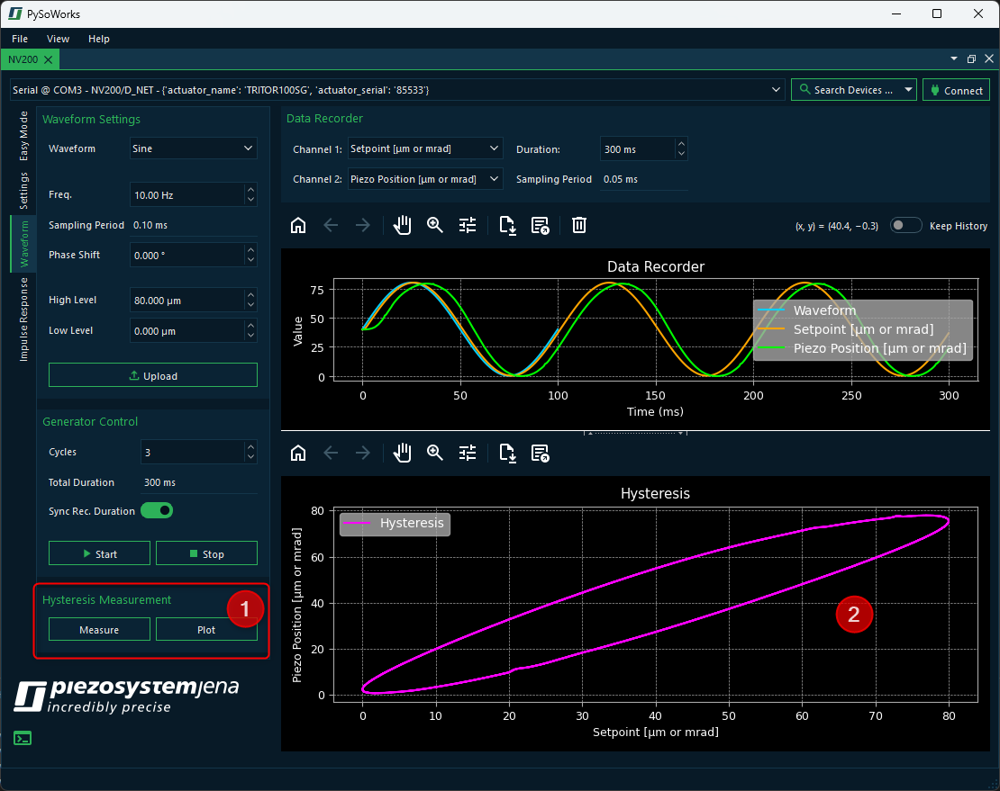

5. Hysteresis Measurement
In the Waveform panel, you can also perform hysteresis measurements. This allows you to analyze the behavior of your actuator under varying conditions.
In the Hysteresis section ❶, you have two buttons Measure and Plot. If you already have data recorded in the Data Recorder Plot, you can simply click the Plot button to plot the hysteresis of the recorded data in the Hysteresis Plot ❷.
Tip
For a good hysteresis plot you should record a minimum of 3 cycles.
If you have no recorded data yet, you should perform the following steps:
Setup and upload a waveform like documented in the Generating a Waveform section.
Configure the Data Recorder to record the necessary data during waveform playback. Make sure to select the appropriate channels and set the recording duration to cover at least 3 cycles of the waveform.
Click the Measure button to automatically run and record 3 cycles of the waveform.
This will generate and plot the necessary data for the hysteresis measurement.